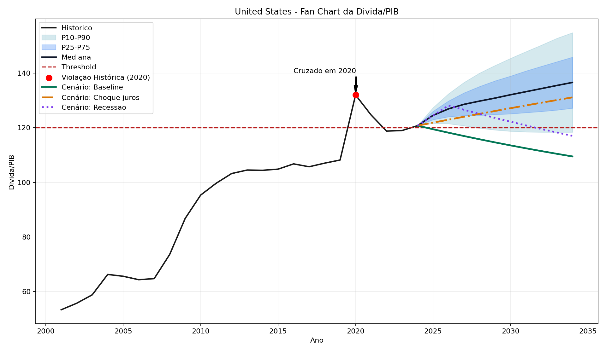
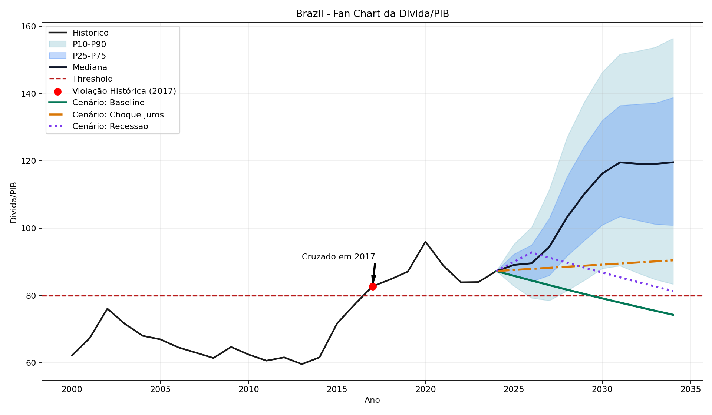
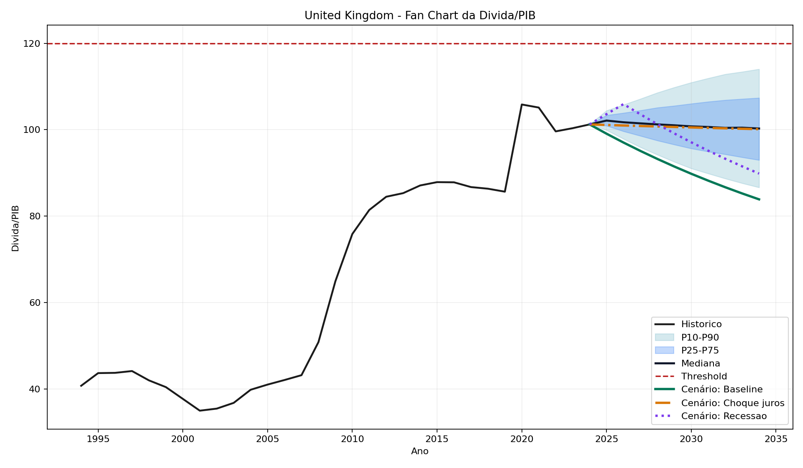

Viabilidade Fiscal, Distorções Monetárias e Sustentabilidade Estocástica
Resumo. Este artigo apresenta a versão revisada do MVFA para avaliar restrições de sustentabilidade fiscal e monetária em um painel internacional. O desenho combina cinco métricas observadas em 2024 (Gap de Domar, diferencial de Wicksell, EMA, ISF e IDEC) com uma análise estocástica de sustentabilidade da dívida baseada em VAR e 10.000 simulações de Monte Carlo. O objetivo não é prever crises, mas verificar se as condições contábeis e monetárias observadas permanecem consistentes com trajetórias não divergentes sob incerteza historicamente calibrada. O texto a seguir elimina ambiguidades de classificação, explicita lacunas de dados, documenta exceções metodológicas, reporta sensibilidade de limiares e separa risco estocástico de limiar de dívida das demais métricas estruturais.
1. Revisão de Literatura e Posicionamento
A literatura clássica de sustentabilidade fiscal parte da aritmética de Domar (1944) e, em formulações recentes, da discussão sobre a diferença entre juros e crescimento em Blanchard (2019). Essa tradição enfatiza quando o saldo primário observado deixa de ser compatível com estabilização da dívida. Em paralelo, a literatura institucional de Debt Sustainability Analysis do FMI, da Comissão Europeia e do ESM adicionou cenários, bandas de probabilidade e fan charts para transformar identidades contábeis em diagnósticos probabilísticos de médio prazo.
O MVFA se aproxima dessa tradição no seu bloco estocástico: a SDSA do artigo usa um VAR calibrado em dados históricos, exclusão do choque pandêmico de 2020–2021, dummy para 2008–2009 e simulação de Monte Carlo com 10.000 trajetórias. A diferença substantiva é que o modelo não se limita ao eixo dívida/PIB. Ele agrega também o diferencial de Wicksell, a expansão monetária ajustada e um proxy de distorção da estrutura de capital, permitindo separar risco fiscal de fluxo, risco monetário e fragilidade de composição do investimento.
Essa diferença de escopo exige cuidado inferencial. O artigo não sustenta que qualquer métrica isolada determine uma crise, nem substitui os exercícios de DSA oficiais. O que ele propõe é um overlay verificável: as contas de Domar e ISF permanecem diretamente comparáveis com a literatura de sustentabilidade fiscal, enquanto Wicksell, EMA e IDEC funcionam como camadas adicionais de diagnóstico monetário e estrutural.
O adjetivo “austríaco”, portanto, deve ser entendido como lente interpretativa e escolha de ênfase, não como adesão metodológica estrita à praxeologia ou rejeição completa da econometria. Em sentido estrito, a Escola Austríaca clássica é cética em relação a agregados macroeconômicos, séries de preços e inferência econométrica. O MVFA não resolve essa tensão; ele a declara. O uso de VAR, ADF e Monte Carlo serve aqui como auditoria quantitativa de restrições contábeis e monetárias, não como tentativa de converter a teoria austríaca em econometria padrão.
2. Dados e Política de Tratamento
O painel cobre 22 unidades observacionais: 21 países/agregados regionais explicitamente enumerados no enunciado mais o agregado global ponderado por PIB em PPP. O texto original do prompt menciona 23 unidades, mas a própria enumeração fecha em 22; o artigo passa a declarar esse ponto de forma explícita. As séries provêm de fontes oficiais acessadas por API ou download automatizado, com destaque para IMF WEO e Fiscal Monitor, BIS, OECD, World Bank, NY Fed, Richmond Fed, BCRA e BDL.
O tratamento de dados foi desenhado para privilegiar observações reais em vez de preenchimentos sinteticamente convenientes. Não há interpolação de séries macro centrais na tabela final; quando uma métrica não pode ser calculada com base observada suficiente, o resultado permanece ausente e a classificação é rebaixada para leitura conservadora. A principal harmonização aplicada de forma sistemática é a atribuição da taxa de política e do estimador HLW da Área do Euro aos membros monetários do painel sem série nacional publicada, o que afeta 5 país(es) no ano-base.
Amostra operacional
15 unidades com cobertura completa nas cinco métricas em 2024.
7 unidades com pelo menos uma lacuna explícita, mantida sem imputação ad hoc.
6 unidades com cobertura monetária inferior a 100%, o que afeta principalmente a EMA.
Contagem de status
11 INSUSTENTÁVEL
11 LIMIAR
0 SUSTENTÁVEL
3. Construção das Métricas e Regra de Classificação
O Gap de Domar mede a diferença entre o superávit primário requerido e o observado. O diferencial de Wicksell é reportado como intervalo entre estimadores operacionais de r*, combinando séries oficiais (HLW, Lubik-Matthes, FAVAR) e auxiliares transparentes apenas quando necessárias para manter comparabilidade. A EMA mede excesso monetário ajustado por velocidade, crescimento real e meta de inflação. O ISF quantifica a parcela da receita absorvida pelo serviço da dívida. O IDEC mede a relação entre investimento sensível a juros e poupança privada, mas deve ser lido como proxy exploratória de composição do investimento, não como observação direta de “malinvestment” no sentido forte da teoria austríaca do ciclo.
A classificação foi revisada para remover inconsistências. O status INSUSTENTAVEL exige ao menos uma violação central observada (Gap de Domar superior a 0,5 p.p. do PIB ou ISF maior ou igual a 20%) ou acúmulo de dois sinais auxiliares severos. O status LIMIAR é atribuído quando há um único sinal severo auxiliar, sinais amarelos persistentes, cobertura insuficiente em métricas-chave ou um Gap de Domar positivo, porém pequeno, dentro da faixa de materialidade. Essa regra elimina a antiga situação em que um único sinal de Wicksell podia automaticamente reclassificar um país para o grupo mais grave e trata gaps de fluxo muito pequenos com a cautela exigida por erro de mensuração.
Como esses limiares continuam normativos, o pipeline agora exporta uma grade de sensibilidade com combinações plausíveis para o gatilho de Domar (0,0; 0,5; 1,0 p.p. do PIB) e para o ISF (18%; 20%; 25%). No recorte de 2024, o número de casos INSUSTENTÁVEL varia entre 9 e 12, enquanto o número de casos LIMIAR varia entre 10 e 13. Em 19 de 22 unidades a classificação final é invariável nessa grade; as mudanças concentram-se em 3 casos de fronteira, incluindo Austrália, Índia, Reino Unido.
Correção metodológica central. O artigo anterior apresentava intervalos degenerados de Wicksell e comparava probabilidades estocásticas com linguagem vaga de “risco VAR”. Nesta versão, os intervalos são explicitamente calculados como intervalos reais ou reportados como N/A quando a informação é insuficiente; e a saída estocástica é rotulada pelo evento probabilístico efetivamente calculado.
4. Desenho Econométrico e Análise Estocástica
A SDSA do MVFA estima um VAR por país com variáveis endógenas de crescimento real do PIB, inflação do deflator, yield nominal de 10 anos, saldo primário/PIB, dívida/PIB e, quando disponível, variação cambial real. A seleção de defasagens segue AIC/BIC com máximo de duas defasagens. O período de estimação-base vai de 1995 a 2019, com exclusão de 2020 e 2021 para evitar contaminação da matriz de covariância por choques excepcionais de pandemia. Há ainda uma dummy para 2008–2009, e os resíduos são winsorizados nos percentis 5 e 95 antes do cálculo de Σ. Como resposta à crítica de amostra “limpa demais”, o pipeline exporta também uma reestimação de sensibilidade com dados de 1995 a 2024, incluindo 2020–2021 e o ajuste pós-pandemia.
As 10.000 trajetórias simuladas alimentam a dinâmica da dívida para um horizonte de 10 anos. O artigo passa a reportar duas probabilidades distintas: Pr[limiar, t+5], que é a métrica usada na regra de classificação estocástica do prompt, e Pr[limiar em qualquer ano até t+5], que informa se o cruzamento ocorre em algum ponto do quinquênio. Para a maioria dos países, o limiar é expresso como dívida/PIB acima de 80% (emergentes) ou 120% (avançados). Para o Japão, o critério probabilístico é ISF maior que 25%, conforme a exceção explicitamente prevista no enunciado.
5. Testes Econométricos e Estabilidade
Os diagnósticos econométricos deixam de ficar implícitos. O pipeline exporta agora, para cada país, a ordem escolhida do VAR, os critérios de informação, o módulo máximo das raízes da matriz companheira e os testes ADF por variável. No painel estimado, 13 de 22 modelos eram estáveis na forma bruta; 12 especificações receberam regularização espectral leve antes da simulação para reduzir persistência excessiva em pequena amostra. Com isso, 22 de 22 especificações finais satisfazem a condição de estabilidade, com mediana do maior módulo ajustado igual a 0.975. As tabelas completas estão nos apêndices em var_diagnostics.csv e adf_diagnostics.csv.
Os testes ADF não são usados como filtro mecânico para excluir séries, porque o objetivo da SDSA é gerar trajetórias condicionais para razões fiscais e não estimar relações estruturais de longo prazo. Ainda assim, reportá-los é importante para transparência: como esperado, variáveis de fluxo como crescimento, inflação e saldo primário tendem a rejeitar raiz unitária com mais frequência do que dívida/PIB. A Tabela 1A resume a fração de países em que a hipótese nula de raiz unitária é rejeitada a 5%.
| Variável | Rejeições ADF (5%) | Total | Participação |
|---|---|---|---|
| Dívida/PIB | 2 | 22 | 9.1% |
| Câmbio real efetivo | 10 | 20 | 50.0% |
| Inflação do deflator | 9 | 22 | 40.9% |
| Crescimento real do PIB | 14 | 22 | 63.6% |
| Saldo primário/PIB | 5 | 22 | 22.7% |
| Yield nominal de 10 anos | 5 | 22 | 22.7% |
6. Resultados de 2024
A Tabela 1 sintetiza os resultados no ano-base. A coluna de evento estocástico foi renomeada para deixar claro qual limiar está sendo testado; isso elimina a leitura equivocada de que a probabilidade apresentada resuma toda a condição macro-fiscal do país. No corpo do artigo, essas probabilidades passam a ser exibidas em pontos percentuais inteiros para reduzir aparência de falsa precisão em amostras anuais curtas; os valores completos permanecem exportados nas tabelas auxiliares.
| País | Gap Domar | DeltaW [min,max] | EMA (%) | ISF (%) | IDEC | Evento estocástico | Pr[limiar, t+5] | Pr[limiar, t+1:t+5] | Status final |
|---|---|---|---|---|---|---|---|---|---|
| Argentina | -190.89 | [76.86, 156.38] | 50.08 | 5.08 | 0.95 | Dívida/PIB > 80% | 0% | 0% | INSUSTENTÁVEL |
| Austrália | 0.26 | [-0.40, 1.14] | -2.36 | 2.97 | 0.09 | Dívida/PIB > 120% | 0% | 0% | LIMIAR |
| Brasil | 0.73 | [-5.14, -4.47] | -5.44 | 16.20 | 2.81 | Dívida/PIB > 80% | 94% | 99% | INSUSTENTÁVEL |
| Canadá | -2.90 | [-1.74, 0.57] | -0.19 | 0.51 | 0.11 | Dívida/PIB > 120% | 0% | 0% | LIMIAR |
| China | 3.62 | [-2.05, -1.16] | -5.07 | 3.73 | 0.71 | Dívida/PIB > 80% | 97% | 100% | INSUSTENTÁVEL |
| Área do Euro | -0.57 | [-3.37, 1.34] | 1.07 | 4.09 | 1.34 | Dívida/PIB > 120% | 0% | 0% | LIMIAR |
| Agregado Global | -2.65 | [-2.69, 1.12] | -0.65 | 7.33 | 0.02 | Dívida/PIB > 120% | 0% | 0% | LIMIAR |
| Grécia | -8.31 | [-3.17, 1.15] | N/A | 6.62 | 0.73 | Dívida/PIB > 80% | 100% | 100% | INSUSTENTÁVEL |
| Índia | -0.01 | [-2.75, -1.04] | -2.91 | 24.29 | 1.54 | Dívida/PIB > 80% | 16% | 68% | INSUSTENTÁVEL |
| Indonésia | -0.05 | [-4.25, -2.88] | -5.39 | 15.10 | 1.18 | Dívida/PIB > 80% | 0% | 0% | LIMIAR |
| Irlanda | -6.26 | [-2.60, 1.34] | N/A | 1.33 | 0.09 | Dívida/PIB > 120% | 0% | 0% | LIMIAR |
| Itália | -0.32 | [-3.17, 0.10] | N/A | 7.94 | 0.10 | Dívida/PIB > 120% | 100% | 100% | INSUSTENTÁVEL |
| Japão | -4.73 | [0.71, 5.10] | -6.44 | 1.04 | 0.09 | ISF > 25% | 0% | 0% | LIMIAR |
| Líbano | N/A | N/A | N/A | 4.39 | N/A | Dívida/PIB > 80% | 100% | 100% | INSUSTENTÁVEL |
| México | 3.30 | [-3.84, -3.04] | -0.33 | 24.02 | 0.06 | Dívida/PIB > 80% | 1% | 1% | INSUSTENTÁVEL |
| Portugal | -6.61 | [-2.52, 2.43] | N/A | 4.17 | 0.13 | Dívida/PIB > 120% | 0% | 0% | LIMIAR |
| Arábia Saudita | 2.35 | [-7.96, -3.09] | N/A | 0.33 | 1.45 | Dívida/PIB > 80% | 0% | 0% | INSUSTENTÁVEL |
| Coreia do Sul | -2.46 | [-0.27, 2.99] | -2.04 | 0.00 | 1.28 | Dívida/PIB > 120% | 0% | 0% | LIMIAR |
| Espanha | -3.06 | [-3.22, 0.98] | N/A | 4.30 | 0.18 | Dívida/PIB > 120% | 0% | 0% | LIMIAR |
| Turquia | -10.65 | [-29.98, 12.88] | 16.35 | 7.44 | 0.65 | Dívida/PIB > 80% | 0% | 0% | LIMIAR |
| Reino Unido | 0.66 | [-2.84, 1.46] | 4.53 | 5.13 | 0.50 | Dívida/PIB > 120% | 0% | 0% | INSUSTENTÁVEL |
| Estados Unidos | 1.09 | [-4.23, -0.67] | 0.50 | 12.19 | 2.73 | Dívida/PIB > 120% | 88% | 99% | INSUSTENTÁVEL |
Tabela 1. O evento estocástico é especificado país a país. Assim, um valor de 0,0% significa apenas que o limiar adotado na SDSA não foi cruzado nas simulações; ele não apaga sinais contemporâneos adversos nas métricas estáticas.
7. Lacunas de Dados e Notas Explicativas
As ausências deixam de aparecer como “N/A” sem contexto. A Tabela 2 resume as métricas faltantes no ano-base e a justificativa operacional. Nos membros periféricos da Área do Euro, a correção de política monetária comum eliminou a perda artificial do Wicksell; a lacuna residual concentra-se sobretudo na EMA, por ausência de agregado monetário comparável no recorte anual adotado. O Líbano permanece como caso de cobertura materialmente incompleta.
| País | Métricas faltantes em 2024 | Explicação operacional |
|---|---|---|
| Grécia | EMA | EMA indisponível no ano-base por ausência de agregado monetário amplo consistente e comparável na coleta via API. |
| Irlanda | EMA | EMA indisponível no ano-base por ausência de agregado monetário amplo consistente e comparável na coleta via API. |
| Itália | EMA | EMA indisponível no ano-base por ausência de agregado monetário amplo consistente e comparável na coleta via API. |
| Líbano | Domar, DeltaW, EMA, IDEC | A classificação foi mantida em chave conservadora por cobertura incompleta em pelo menos duas métricas centrais. As leituras para o Líbano permanecem parciais no ano-base, com lacunas em taxa de política, EMA e IDEC; o caso deve ser lido como evidência incompleta. EMA indisponível no ano-base por ausência de agregado monetário amplo consistente e comparável na coleta via API. IDEC indisponível no ano-base por ausência simultânea de FBCF setorial e de proxy de crédito habitacional suficiente. ΔW indisponível no ano-base porque não houve combinação observável suficiente entre taxa de política real e estimadores de r*. Embora o evento oficial da SDSA use dívida/PIB, a probabilidade simulada de ISF elevado em t+5 permanece alta (100.0%). |
| Portugal | EMA | EMA indisponível no ano-base por ausência de agregado monetário amplo consistente e comparável na coleta via API. |
| Arábia Saudita | EMA | EMA indisponível no ano-base por ausência de agregado monetário amplo consistente e comparável na coleta via API. Há violação contemporânea de Domar, mas a probabilidade do evento estocástico em cinco anos permanece baixa porque a mediana simulada da dívida em t+5 (2.3% do PIB) segue abaixo do limiar adotado (80% do PIB). |
| Espanha | EMA | EMA indisponível no ano-base por ausência de agregado monetário amplo consistente e comparável na coleta via API. Probabilidade de 0,0% aplica-se apenas ao limiar estocástico (dívida/PIB); sinais contemporâneos adversos nas métricas estáticas permanecem relevantes. |
Argentina
- Embora o evento oficial da SDSA use dívida/PIB, a probabilidade simulada de ISF elevado em t+5 permanece alta (99.7%).
- Probabilidade de 0,0% aplica-se apenas ao limiar estocástico (dívida/PIB); sinais contemporâneos adversos nas métricas estáticas permanecem relevantes.
- Gap de Domar muito negativo reflete erosão inflacionária ex post do custo real da dívida; isso não deve ser lido como conforto fiscal estrutural.
Austrália
- O Gap de Domar é positivo, porém pequeno (≤ 0,5 p.p. do PIB); nesta versão ele é tratado como sinal limiar, não como violação central isolada.
- Probabilidade de 0,0% aplica-se apenas ao limiar estocástico (dívida/PIB); sinais contemporâneos adversos nas métricas estáticas permanecem relevantes.
Brasil
- Embora o evento oficial da SDSA use dívida/PIB, a probabilidade simulada de ISF elevado em t+5 permanece alta (57.8%).
Canadá
- Probabilidade de 0,0% aplica-se apenas ao limiar estocástico (dívida/PIB); sinais contemporâneos adversos nas métricas estáticas permanecem relevantes.
Área do Euro
- Probabilidade de 0,0% aplica-se apenas ao limiar estocástico (dívida/PIB); sinais contemporâneos adversos nas métricas estáticas permanecem relevantes.
Agregado Global
- Probabilidade de 0,0% aplica-se apenas ao limiar estocástico (dívida/PIB); sinais contemporâneos adversos nas métricas estáticas permanecem relevantes.
Grécia
- EMA indisponível no ano-base por ausência de agregado monetário amplo consistente e comparável na coleta via API.
Índia
- A diferença entre Pr[limiar, t+5] e Pr[limiar em qualquer ano até t+5] é material (15.9% vs. 68.0%), sugerindo risco de cruzamento antecipado ou transitório dentro do quinquênio.
- Embora o evento oficial da SDSA use dívida/PIB, a probabilidade simulada de ISF elevado em t+5 permanece alta (92.7%).
- O ISF no ano-base excede 20%, caracterizando pressão de serviço da dívida pelo critério central do modelo; a mediana simulada do ISF em t+5 é 23.2%.
Indonésia
- Probabilidade de 0,0% aplica-se apenas ao limiar estocástico (dívida/PIB); sinais contemporâneos adversos nas métricas estáticas permanecem relevantes.
Irlanda
- EMA indisponível no ano-base por ausência de agregado monetário amplo consistente e comparável na coleta via API.
Itália
- EMA indisponível no ano-base por ausência de agregado monetário amplo consistente e comparável na coleta via API.
Japão
- Na SDSA, a probabilidade reportada usa ISF > 25% em cinco anos como critério alternativo, não dívida/PIB > 120%.
- Probabilidade de 0,0% aplica-se apenas ao limiar estocástico (ISF); sinais contemporâneos adversos nas métricas estáticas permanecem relevantes.
Líbano
- A classificação foi mantida em chave conservadora por cobertura incompleta em pelo menos duas métricas centrais.
- As leituras para o Líbano permanecem parciais no ano-base, com lacunas em taxa de política, EMA e IDEC; o caso deve ser lido como evidência incompleta.
- EMA indisponível no ano-base por ausência de agregado monetário amplo consistente e comparável na coleta via API.
- IDEC indisponível no ano-base por ausência simultânea de FBCF setorial e de proxy de crédito habitacional suficiente.
- ΔW indisponível no ano-base porque não houve combinação observável suficiente entre taxa de política real e estimadores de r*.
- Embora o evento oficial da SDSA use dívida/PIB, a probabilidade simulada de ISF elevado em t+5 permanece alta (100.0%).
México
- Há violação contemporânea de Domar, mas a probabilidade do evento estocástico em cinco anos permanece baixa porque a mediana simulada da dívida em t+5 (57.6% do PIB) segue abaixo do limiar adotado (80% do PIB).
- O ISF no ano-base excede 20%, caracterizando pressão de serviço da dívida pelo critério central do modelo; a mediana simulada do ISF em t+5 é 17.2%.
Portugal
- EMA indisponível no ano-base por ausência de agregado monetário amplo consistente e comparável na coleta via API.
Arábia Saudita
- EMA indisponível no ano-base por ausência de agregado monetário amplo consistente e comparável na coleta via API.
- Há violação contemporânea de Domar, mas a probabilidade do evento estocástico em cinco anos permanece baixa porque a mediana simulada da dívida em t+5 (2.3% do PIB) segue abaixo do limiar adotado (80% do PIB).
Coreia do Sul
- Probabilidade de 0,0% aplica-se apenas ao limiar estocástico (dívida/PIB); sinais contemporâneos adversos nas métricas estáticas permanecem relevantes.
Espanha
- EMA indisponível no ano-base por ausência de agregado monetário amplo consistente e comparável na coleta via API.
- Probabilidade de 0,0% aplica-se apenas ao limiar estocástico (dívida/PIB); sinais contemporâneos adversos nas métricas estáticas permanecem relevantes.
Turquia
- Probabilidade de 0,0% refere-se apenas ao evento dívida/PIB > limiar em cinco anos; sob juros reais ex post negativos, a aritmética da dívida melhora mesmo com distorções monetárias correntes elevadas.
Reino Unido
- Há violação contemporânea de Domar, mas a probabilidade do evento estocástico em cinco anos permanece baixa porque a mediana simulada da dívida em t+5 (101.0% do PIB) segue abaixo do limiar adotado (120% do PIB).
8. Robustez e Interpretação
Quatro ajustes reforçam a confiabilidade desta versão. Primeiro, o Wicksell passou a usar intervalos efetivos entre estimadores e a registrar explicitamente quando a cobertura é insuficiente. Segundo, o artigo agora diferencia risco estocástico de cruzamento de limiar de dívida das métricas estruturais observadas, o que é particularmente importante para Reino Unido, Austrália e Turquia: a probabilidade de cruzar o limiar pode permanecer baixa mesmo quando há sinal contemporâneo de fluxo fiscal ou distorção monetária. Terceiro, gaps de Domar pequenos deixam de ser tratados como violações centrais automáticas e passam a integrar a zona limiar, o que reduz sensibilidade excessiva a erro de mensuração. Quarto, o cálculo do ISF deixa de aceitar valores negativos mecanicamente derivados de convenções de sinal nas fontes fiscais.
A distinção entre Pr[limiar, t+5] e Pr[limiar em qualquer ano até t+5] deixa de ser apenas notacional. Em 1 unidades, a diferença entre as duas medidas supera 15 p.p., sinalizando que o evento pode ocorrer cedo e depois recuar dentro do horizonte, com destaque para Índia. Em menor magnitude, diferenças ainda relevantes aparecem em Brasil, Estados Unidos. Isso sugere que o ano terminal, isoladamente, pode subestimar a relevância de cruzamentos transitórios para fins de vigilância de risco.
A checagem com inclusão da pandemia não altera a leitura central do painel, mas mostra que a escolha da janela histórica importa. Na comparação entre a estimação-base e a reestimação 1995–2024, a mediana da mudança absoluta em Pr[limiar, t+5] é de 0% e a maior mudança observada é de 100%, com 1 mudança(s) de status estocástico. O maior deslocamento concentra-se em Líbano, caso que já aparece no artigo como cobertura incompleta. Isso reduz a crítica de que o efeito da exclusão pandêmica ficava apenas “reconhecido”, mas não mensurado.
Persistem limites substantivos. O modelo verifica sustentabilidade matemática, não cronologia de crise. O componente r* continua sujeito a incerteza de mensuração. O IDEC depende de proxies heterogêneas fora do núcleo OECD. E a simulação estocástica ainda propaga incerteza de choque, não toda a incerteza de parâmetro do VAR; por isso as probabilidades devem ser lidas como medidas de screening e não como frequências estruturais exatas.
9. Figuras Selecionadas
As figuras abaixo ilustram três configurações distintas do modelo: um avançado com alta probabilidade de cruzamento do limiar, um emergente com risco elevado no quinquênio e um caso em que a probabilidade do limiar de dívida é baixa apesar de um sinal fiscal contemporâneo positivo em Domar.



10. Conclusão
Os resultados revisados sugerem que o painel não pode ser resumido por uma única narrativa de risco. Há economias em que a restrição de Domar ou o ISF já indicam pressão fiscal observada; há outras em que o principal sinal vem de distorções monetárias acumuladas; e há casos em que a leitura permanece necessariamente parcial por falta de cobertura monetária ou setorial compatível. A contribuição empírica do MVFA, nesta versão, está em separar esses canais com regras transparentes, notas explícitas, sensibilidade de limiares e saída estocástica corretamente rotulada. Isso torna o artigo auditável: um leitor pode discordar do enquadramento teórico, mas consegue verificar o cálculo, a origem dos dados e o limite de cada inferência.
A ausência de casos SUSTENTÁVEL no recorte-base não deve ser lida como “prova de colapso global inevitável”. Ela reflete uma regra conservadora em que o rótulo benigno exige simultaneamente ausência de violação central, poucos sinais auxiliares e cobertura adequada. Em termos práticos, o MVFA é mais confiável como instrumento de triagem disciplinada do que como oráculo quantitativo de crise.
Referências Selecionadas
- A5. Wicksell, K. (1898). Interest and Prices (Geldzins und Güterpreise).
- C1. Laubach, T. & Williams, J. C. (2003).
- C2. Holston, K., Laubach, T. & Williams, J. C. (2017).
- C3. Lubik, T. A. & Matthes, C. (2015).
- D1. Domar, E. D. (1944).
- D2. Yoshino, N. & Miyamoto, H. (2021).
- D5. Blanchard, O. (2019).
- E1. Garcia, M. & Rigobon, R. (2004).
- E2. Hostland, D. & Karam, P. (2005).
- E3. Zenios, S., Consiglio, A. & Carollo, A. (2021).
- E4. IMF (2021).
- E5. European Commission (2024).
- E6. European Stability Mechanism (2025).
- G1. IMF Global Debt Database (GDD) — dívida pública e privada, 1950–2024:
- G2. IMF World Economic Outlook Database — PIB, crescimento, inflação:
- G3. IMF Fiscal Monitor — saldo primário, juros pagos, receita fiscal:
- H5. European Commission DG ECFIN (2025).